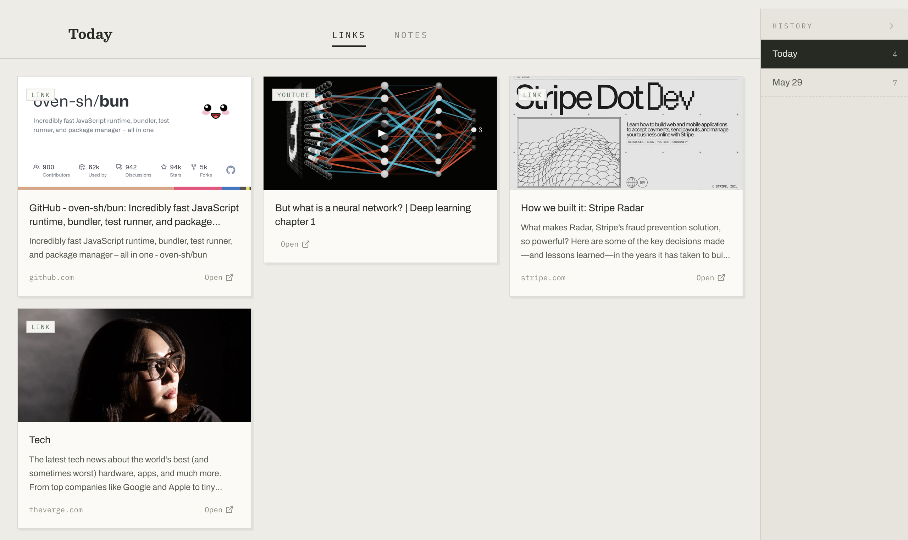

0.0 m · surface · a field guide to everything you keep
/ˈse-də-mənt/ · noun
Particles that settle to the bottom of still water, building layers over time.
A Mac app that does the same with everything you copy. One board per day, nothing leaves your machine, and ⌘K digs anything back up.
free · open source · no account · SQLite on your own disk

stratum ii · how a day is laid down
Your inspiration is scattered across five apps, each a silo you never reopen. Sediment replaces all of their save buttons with the one gesture you already make.
Copy a URL in any app or browser. Sediment watches the clipboard and drops it onto today's board — no window switching, no save button, and an Undo toast if you change your mind.
The link is sorted on arrival: YouTube and Vimeo file as video, X, Instagram, and Bluesky as social, everything else as a link — each with its title, description, and thumbnail fetched in the background. Days stack newest on top.
Weeks later, when the nagging “I saw something about this once” hits, press ⌘K. Full-text search cuts through every layer you have ever laid down and hands the thing back.
stratum iii · composition of the record
stratum iv · provenance
The whole record is one SQLite file on your Mac. There is no account, no sync service, no telemetry — no server anywhere in the picture. And the source is open, so you can read every line that touches your data.
bedrock · start the record
Download Sediment for macOS, copy one link, and watch it settle. That's the whole setup.
macOS 13+ · Apple Silicon & Intel · free & open source (MIT)
First launch: the app isn't notarized with Apple yet, so macOS will warn you.
Right-click Sediment.app → Open, or run xattr -cr /Applications/Sediment.app once.
Prefer to build from source? git clone → bun install → bun run build:mac
— details in the README.